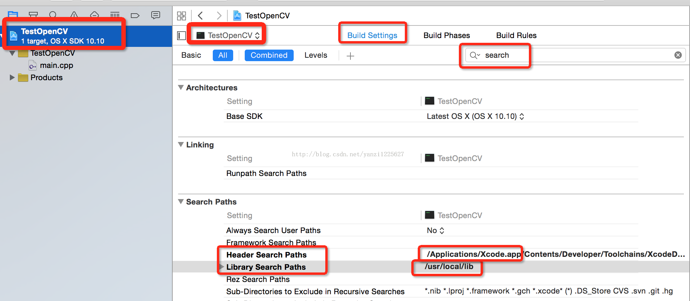
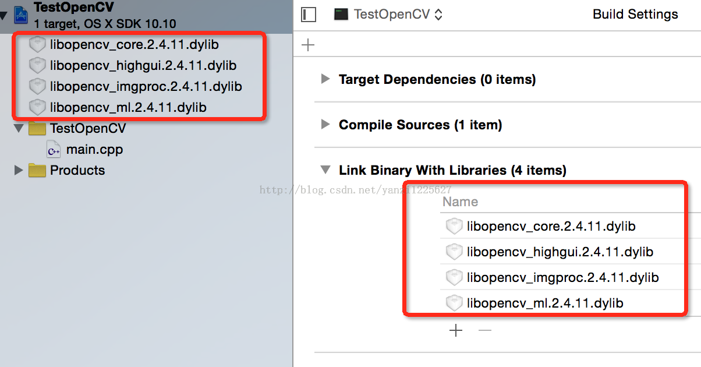

OpenCV¶
Usage in mac¶
使用CMake 1 , 2¶
新建BlurImage.cpp文件
新建CMakeLists.txt文件，代码如下:
cmake_minimum_required(VERSION 2.8) project( BlurImage ) find_package( OpenCV ) include_directories( ${OpenCV_INCLUDE_DIRS} ) add_executable( BlurImage BlurImage.cpp ) target_link_libraries( BlurImage ${OpenCV_LIBS} )编译两个文件
$ cd <path/to/application/folder> $ /usr/local/Cellar/cmake/3.4.1/bin/cmake .i $ make运行编译好的结果
$ ./BlurImage lena.jpg之后新的编程需要做的就是 add your own .cpp file and alter the .txt file. Then follow the above commands.
为 Xcode 配置 OpenCV¶
command line工程¶
打开Xcode，新建一个command line工程：工程名字TestOpenCVDemo，注意语言选择C++。这样C++的HelloWorld就建好了，编译应该能正常运行。接下来先来配置Xcode再来写代码：
添加lib文件查找支持：
最左边选中工程，然后右边选中Targets，在BuildSettings下，右边搜索框里输入search，很快就能找到Search Paths设置项。在Header Search Paths里输入
/usr/local/include在Library Search Paths里输入/usr/local/lib接着在Build Phases里找到Link Binary With Libraries，点击＋号

选择add other，然后按下／键，输入lib的路径
/usr/local/lib,点go：

添加lib文件：
然后就是选择OpenCV的库了，用哪个添加哪个，没必要都添加完。我们添加最基础的几个:
libopencv_core.2.4.11.dylib libopencv_highgui.2.4.11.dylib libopencv_imgproc.2.4.11.dylib libopencv_ml.2.4.11.dylib可以按下command实现多选。添加上面这四个最常用的就可以胜任本次的测试代码了。添加完毕后可以在左侧看到：
添加头文件：
点击工程名文件，进入“Build Settings”选项卡，在“Header Search Paths”栏中输入
/usr/local/include /usr/local/include/opencv在main.cpp里输入以下内容，实现显示一张照片及显示灰度化后的结果
// main.cpp // TestOpenCV #include <iostream> using namespace std; #include <opencv2/opencv.hpp> using namespace cv; int main(int argc, const char * argv[]) { // insert code here... std::cout << "Hello, World!\n"; string path = "/Users/Emily/Downloads/123.jpg"; Mat image = imread(path); namedWindow("NanHuaiJin"); if (!image.empty()){ imshow("NanHuaiJin", image); } Mat gray; cvtColor(image, gray, COLOR_RGBA2GRAY); namedWindow("gray"); imshow("gray", gray); waitKey(0); return 0; }
警告
在第3步，对于C++版的OpenCV，会出现下面的错误:
Undefined symbols for architecture x86_64
“cv::imshow(std::__1::basic_string<char, std::__1::char_traits<char>, std::__1::allocator<char> > const&, cv::_InputArray const&)”, referenced from:_main in main1.o
ld: symbol(s) not found for architecture x86_64
clang: error: linker command failed with exit code 1 (use-v to see invocation)
解决方法为:
Open Build Settings by double-clicking on the project name with the Xcode icon.
In this window, under “Architectures” section, set “Base SDK” to “Current OX S”.
Now scroll down to “Apple LLVM compiler 4.1 – Language” section.
In “C++ Language Dialect”, change it to “Compiler Default”. In “C++ Standard Library”, change it from “libc++ (LLVM …)” to “libstdc++ (GNU C++ …)”
iOS 工程¶
opencv: 下载 .framework 添加到项目中
opencv_contribe for ios: 下载opencv 及 contrib 源码， 将contrib modules 下要用到的模块拷贝到opencv moduls下，然后根据 platforms/ios 下的 readme 编译
为 Eclipse 配置 OpenCV 3¶
安装带有CDT（C/C++ Development Tooling）的Eclipse,使用eclipse建立一个Mac C++工程，包含一个cpp文件
右击工程名, 选择“Properties”，在属性配置页中选择，点击C/C++ Build, 在下拉选项中选择 Settings. 在右边的选项卡中选择 Tool Settings
在GCC C++ Compiler选项列表中选择Includes，在Include paths(-l)中添加安装好的opencv的头文件存放目录
/usr/local/include/(注意最后面的/不能少)如果不知道目录，在命令行输入pkg-config –cflags opencv
在MacOS X C++Linker选项列表中选择Library，在Library search path (-L)中添加安装好的opencv Lib文件存放目录：/usr/local/lib/
如果不知道目录，在命令行输入pkg-config –libs opencv
MacOS X C++Linker选项列表中选择Library, 在Libraries(-l) 中依次点击“＋”号，添加需要使用的Lib文件(通常情况下，使用前三个):
opencv_core opencv_imgproc opencv_highgui opencv_ml opencv_video opencv_features2d opencv_calib3d opencv_objdetect opencv_contrib opencv_legacy opencv_flann重新build all工程
出现失败情况:
launch failed binary not found
解决: File - New - C++ project - 输入工程名称 - 下面Project type 选择Executable里的HelloWorld C++ Project - Finish - 不要运行 - Project -build project - 左侧工程目录下多了一个binaries目录，成功！
很神奇的是，必须严格按照这个流程来创建工程，否则人品好的话，或许会有binaries目录。经多次试验，上述流程最佳对于要输入参数的程序：参考 3
Debug with gdb¶
写一个 python 脚本，然后在运行gdb 以后，输入 source <script.py>, 即可使用其中的命令
警告
如果python脚本写得有问题，可能会影响debug，例如python中输出int类型的mat, 而实际调试的mat是float 类型，那么输出的结果就是错误的
打印mat
显示图片
C++ code¶
Mat¶
Mat 的数据格式
CV_(bits)(type)/channel
C1
C2
C3
C4
Mat.at
CV_8U
0
8
16
24
uchar
CV_8S
1
9
17
25
schar
CV_16U
2
10
18
26
ushort
CV_16S
3
11
19
27
short
CV_32S
4
12
29
28
int
CV_32F
5
13
21
29
float
CV_64F
6
14
22
30
double
Mat 属性
Mat.rows Mat.cols Mat.channels Mat.rowRange(r1, r2).colRange(c1,c2) Mat.type()